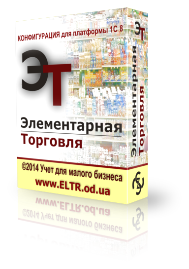

FastMediaSorter_mob_v2
Android AppAndroid application for batch sorting of photos, videos, audio, and documents. Supports local folders, SMB / SFTP / FTP network shares, and cloud storage (Dropbox, Google Drive, OneDrive).

Data warehouse integrator, developer and architect — Snowflake, Athena, MS SQL, MySQL and Oracle, across GCP and AWS.
Android application for batch sorting of photos, videos, audio, and documents. Supports local folders, SMB / SFTP / FTP network shares, and cloud storage (Dropbox, Google Drive, OneDrive).
Windows application for fast and easy media sorting: slideshow display, folder navigation, quick move, copy, rename, and delete actions.
A lightweight Windows system tray utility that corrects text typed in the wrong keyboard layout (QWERTY <-> Cyrillic) with a global hotkey and active layout indicator.
Converter for Windows: EPUB, PDF, MOBI, AZW3, FB2, RTF, TXT, and Markdown to local HTML with optional automatic ebook translation via Google Translate API or local Ollama LLMs.
Windows CLI utility for drive benchmarking, fake-capacity detection, secure data wiping (secure wipe), and duplicate file analysis/management.

Windows system tray application to instantly run frequently used software, console scripts, automation commands, and tasks in a single click.
Portable, stack-agnostic kit for AI-assisted development: rules, skills, roles, a spec lifecycle, and persistent memory for agent-driven work in git repositories.
A dedicated branch of my work is focused on 1C Enterprise solutions. Here, I build practical systems designed for accounting, trade management, and process automation.

A solution for trade and inventory management: small stores, retail chains, service centers, workshops, work crews, and warehouses. Designed to simplify daily operations without unnecessary complexity.
Go to ELTR.od.uaI am open to professional contacts, collaboration, and discussing custom solutions in 1C Enterprise development, workflow automation, desktop/mobile tools, and data/file processing utilities.